Samantha's Sorrow
Shoot 4 Pans Hanging in the Fishing Hut
Pick Up Samantha's Doll on the Ground
Shoot the Samantha's Dolls at the Bridge by the Fishing Hut (Only 1 Spawns at a Time)
Interact with Samantha's Doll on the Ground again
The One (Instrumental)
Interact with the Phone in the Comm Room
Bunny Easter Egg
Pick up 3 Bunny Parts around the Map while in Zombie Blood
-Zipline -Fishing Hut -Area


Free Wunderwaffe DG-2
Go to the Fishing Hut and grab the Weapon Barrel on the Shelf by the Door
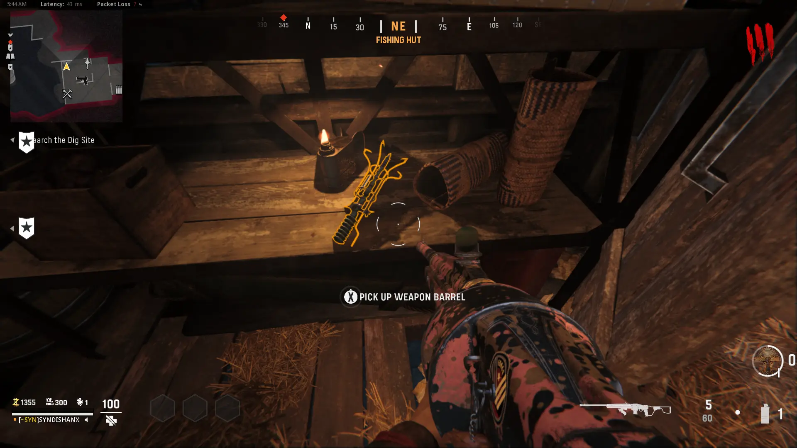
Go to Comm Room Exterior and Place the Weapon Barrel on the Radio
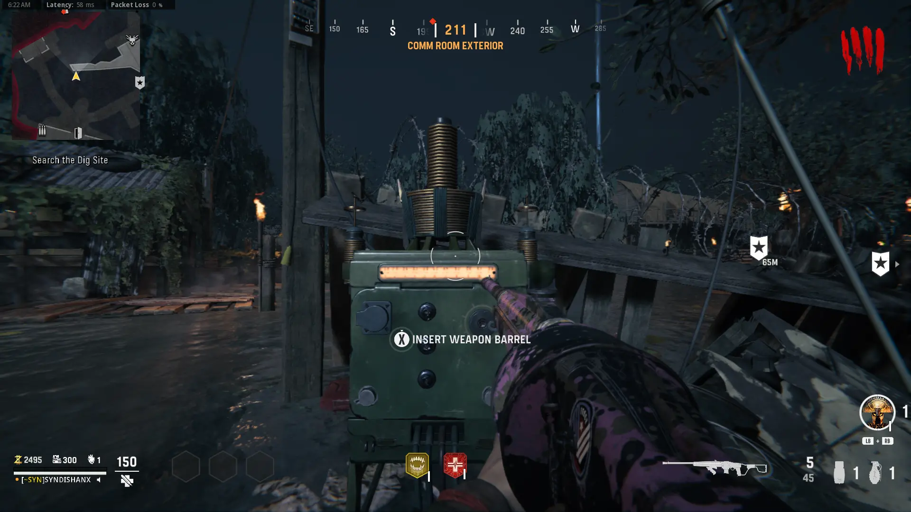
Complete the Current Round
Protect the Radio from the Zombies, Boom Schreier, and Sturmkrieger
Pick up the Weapon Barrel from the Radio
Grab the Vacuum Tube in the Close Right Corner of the Back Left Room in the Comm Room
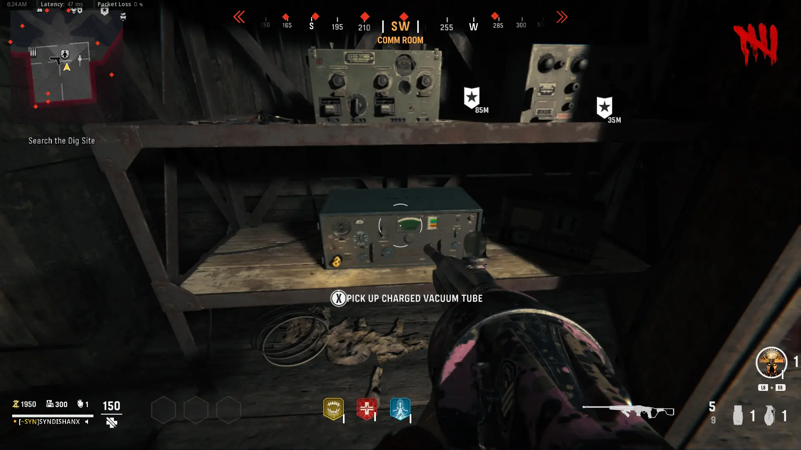
Grab the Electrical Fuse from inside the Comm Room
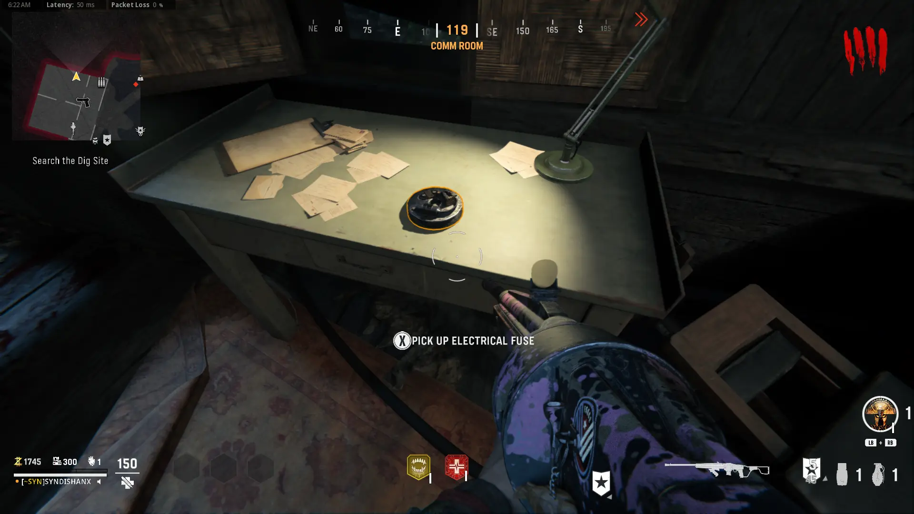
Go to Storage Hut and Activate the Trap, Repair it using the Fuse, and Let the Trap Get kills to Charge the Vacuum Tube
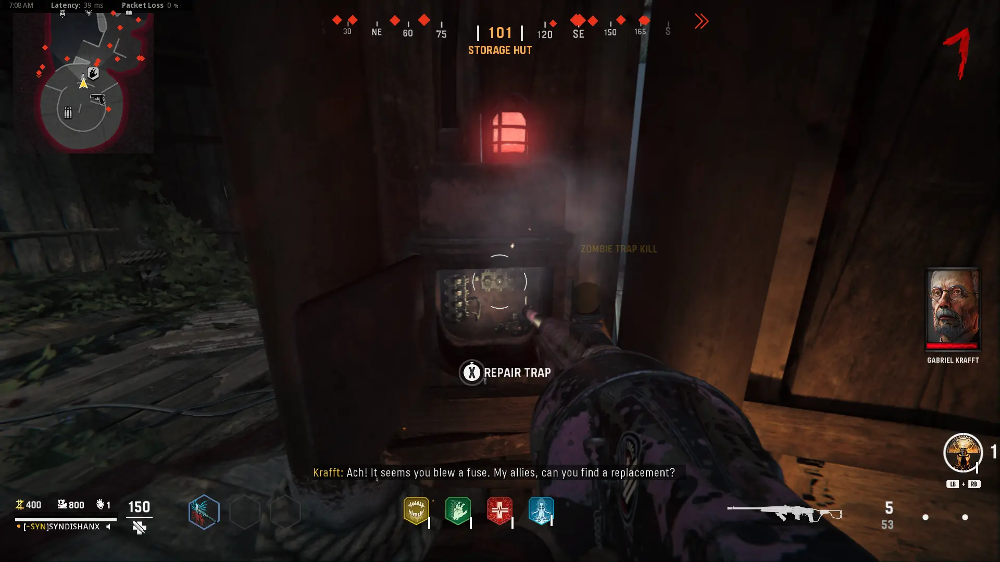
Wait until Round 15, and have Zaballa Attack you near the Machine in the Excavation Room, then grab the Charged Vacuum Tube
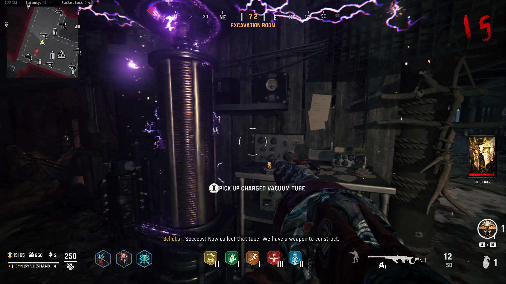
Build the Wunderwaffe DG-2 in the Storage Hut
Main Quest
Grab the Cipher Wheel Pieces
-Dormitory -Dig Site -Doctor's Quarters
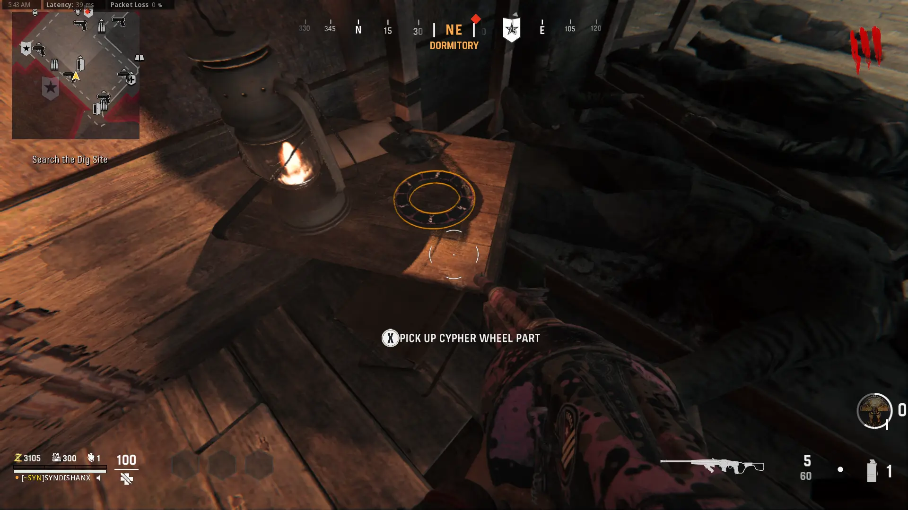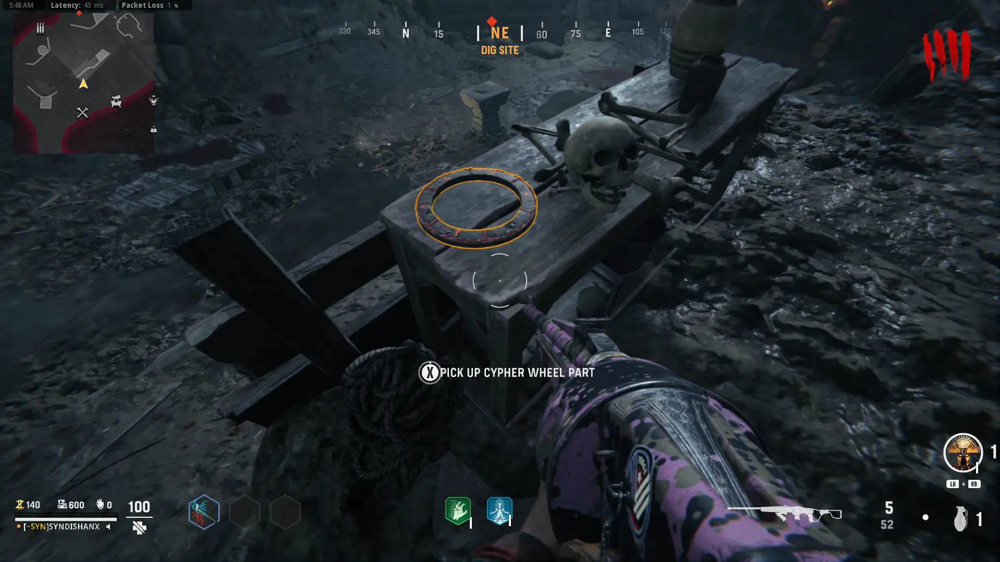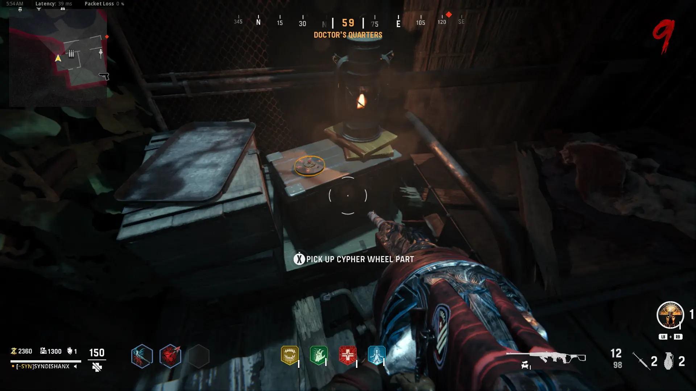
Have 2 Boom Schreier's Explode near the Monolith to Uncover it
Throw any Fire Grenade at the Encrytion Key to Reveal the other Half
Insert the Cipher Wheel Parts into the Monolith
Locate all 3 Symbols on the Map
-Dig Site -Comm Room -Excavation Room
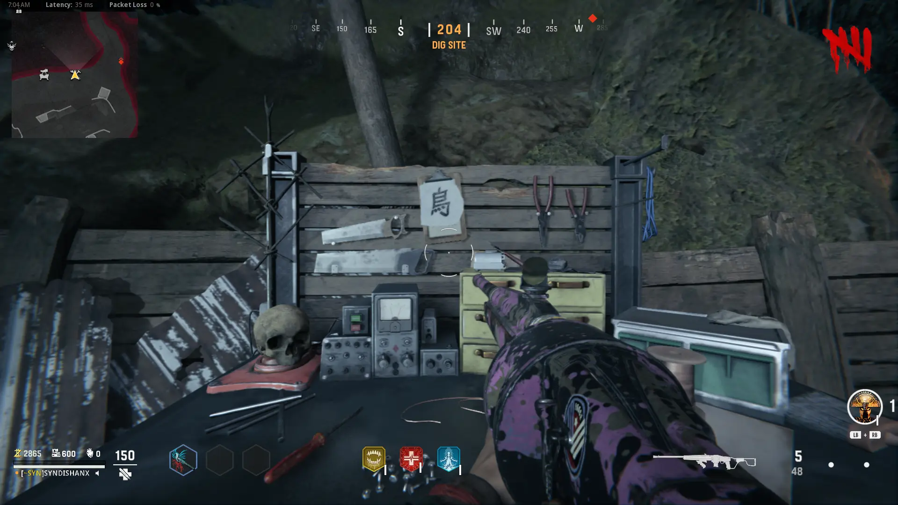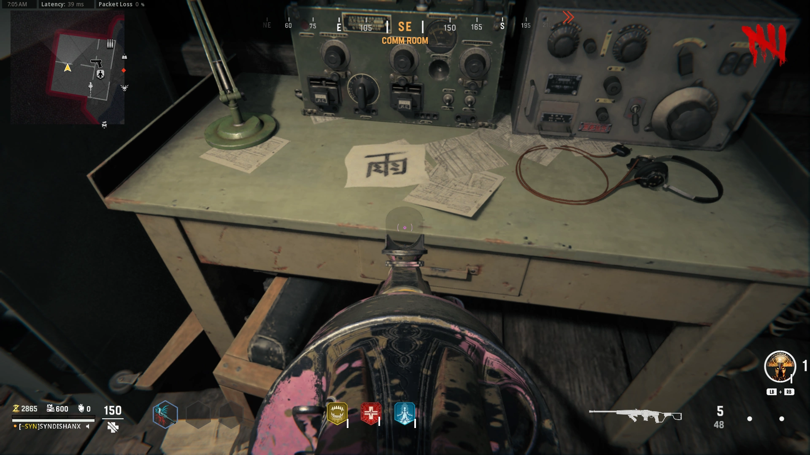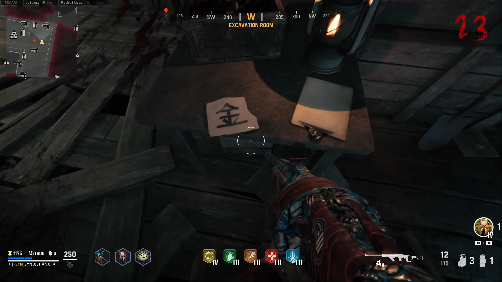
Use the Encrytion Key to Decipher them
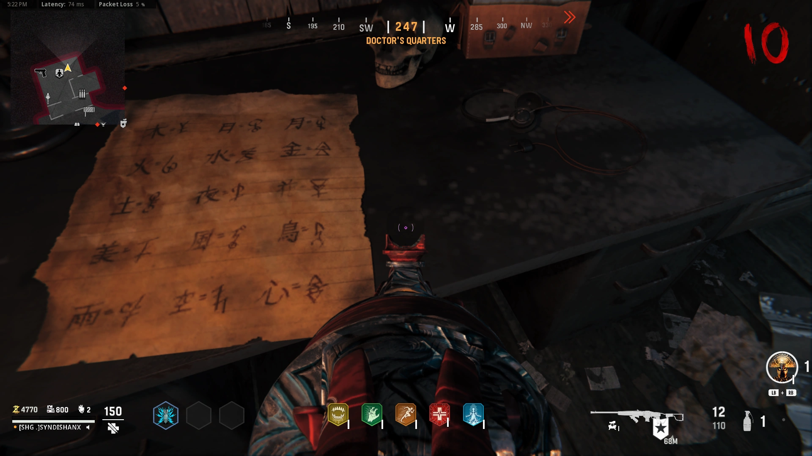
Once you have all 3 Deciphered Symbols, input them into the Monolith (Align the Symbols from Top to Bottom)
Start the Cermony, the Blue Zombies need to be killed by the Monolith using the Wunderwaffe
Kill Zombies with the Flogger to Fill up the Demon Altar, then Drink the Blood from the Fountain to Enter Zombie Blood
Look at the Map in the War Room to Find the Mirror Part
Once you're in the Room Shown on the Map, Find the Part on the Ceiling then Shoot it to Bring it Down
A Red Orb will Spawn in the Main Hut, Escort the Orb to get the Last Piece
Place the Mirror Pieces on the Altar at the Dig Site
Interact with the Orb to Make it Fly somehwere on the Map, Find it and Shoot it, Repeat a few Times
Interact with the Orb to Summon the Echo and Watch the Cutscene
Another Ceremony will Start, Kill the Blue Zombies with the Wunderwaffe to Charge the Relic
Once the Relic is Charged the Echo will be Weakened (The Echo's Mask is its Weak Spot)
Once you Destroy a Mask the Blue Zombies will be Replaced with Boom Schreier's and Sturmkrieger's
After you Destroy all of The Masks, you can Pick up the Relic